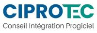
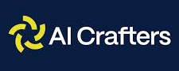

Expériences
Quatre stages, des réalisations concrètes.
Pour chaque stage : le contexte, ma contribution et les résultats.
-
2026 · 4 semaines

Stage · Stagiaire : conception et développement d’un portail d’agents IA
AI Expert Hub, un portail d’agents IA
Un portail qui rend un catalogue d’agents IA simple à utiliser : trouver l’expert, lui transmettre du contexte, reprendre la conversation.
 Python
Python FastAPI
FastAPI Pydantic
Pydantic SQLite
SQLite HTML
HTML CSS
CSS JavaScript
JavaScript- HTTPX
- REST
- WebSocket
-
2026 · 2 semaines

Stage · Stagiaire : développement Python
Suivi des factures et relances WhatsApp
Une application qui suit les factures et leurs échéances, puis relance automatiquement les clients par WhatsApp.
- Python
- Streamlit
 WhatsApp
WhatsApp Meta for Developers
Meta for Developers
-
2025 · 4 semaines

Stage · Stagiaire : intelligence artificielle
Un portail unique pour toutes les applications
Centralisation, catégorisation et documentation des applications de l’entreprise, regroupées dans un seul portail.
Voir le détail -
2024 · 4 semaines
Stage · Stagiaire : développement web
Application de gestion pour Atlas Vétérinaire
Une application web qui gère le stock, les clients, les ventes et le chiffre d’affaires d’Atlas Vétérinaire.
- HTML
- PHP